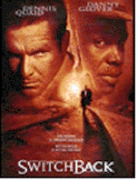
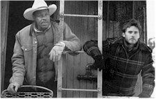
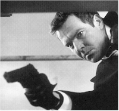

Contents | Features | Reviews | Books | Archives | Store |
 |
|
| Movie Credits | Buy It! |
SwitchBack
Review by Eddie
Cockrell
Posted 31 October 1997
|  | Written and Directed by Jeb Stuart Starring
Danny Glover, Dennis Quaid, |
"Intelligent and elusive" is the first phrase employed by the studio to describe this week's new serial killer thriller (they come and go like streetcars in these pre-Oscar consideration months), and although it is used to describe a mysterious, peripatetic madman with a distinctive m.o. – he likes knives – the movie as a whole may be described the same way: smartly plotted and gorgeously photographed on stunning Colorado locations, SwitchBack is ultimately undone by a remote protagonist, shallow characters and a glum, almost soporific pace.
Until a central mystery is solved about an hour into the film, SwitchBack is an absorbing and provocative whodunit that strings together a series of seemingly unrelated incidents into an intriguing chain of mysterious and sinister goings-on. First, a creepy stranger assaults a babysitter and kidnaps a child. Then, perhaps states away, drifter Lane Dixon (Jared Leto) falls in with charismatic ex-railroad man Bob Goodall (Danny Glover) after they extricate each other from a messy roadhouse confrontation in the New Mexico desert. And in Amarillo, Texas, folksy sheriff Buck Olmstead (R. Lee Ermey) and his deputy Nate Booker (Ted Levine) are on the eve of the election that will pit the long-time incumbent against clearly unqualified political animal Jack McGinnis (William Fichtner).
The link that brings them all together is tight-lipped FBI agent Frank LaCrosse (Dennis Quaid), who arrives in hot pursuit of a cross-country serial killer (the film was known as Going West during production) and promptly antagonizes both Olmstead and McGinnis by interfering in a related case.
Just as the two lawmen seem to be smoothing out their differences, the sheriff discovers that the federal agent is in fact working outside his bureau jurisdiction and has had his son kidnapped by the prolific killer (18 known victims to date), who has taunted LaCrosse throughout his 15-month murder spree.
When all available clues point to the distinctive car Bob is driving (every available interior surface is laminated with nude photo spreads), he and Lane become the chief suspects and the focus of a dazzling high-altitude train pursuit during which everyone's true motivations are revealed.
"It's very important for the audience to sympathize with LaCrosse," explains producer Gale Anne Hurd, who is known more for spectacular effects movies on the order of Aliens (1986) and this year's Dante's Peak than quite character pieces (although she did produce 1994's luminous and under-appreciated Safe Passage, with Susan Sarandon). Tough luck there, as the central problem with the film is that it is virtually impossible to identify with LaCrosse on any level save an obsession with his lost boy (a legitimate but rather crass ploy), and his grim-faced reticence makes even that a struggle. Add to that the ill-advised early scene where the FBI reveals that LaCrosse is AWOL from his job, and audiences can be forgiven spending the middle of the film suspecting Frank himself – if not of the crimes than of being seriously deranged instead of merely focused.
 In this light
it is perhaps not surprising to learn that this is in fact writer-director Jeb Stuart's
very first screenplay, written while he was still an undergraduate at Stanford and had yet
to score enduring industry success with 48 Hrs. (1982), Die Hard (1988) and The
Fugitive (1993) – well-plotted thrillers all, and with appealing characters in
plausible but unlikely situations. SwitchBack is not so self-assured: while the
world of remote railroading is evoked splendidly by the new film, as is the rural
camaraderie of those who make their living that way, a sign of the film's fundamental
insecurity can be found in two regrettable thriller cliches. In the first five minutes, a
cat jumps out of nowhere to frighten the terrified babysitter (there ought to be a law
against this cheap trick), and towards the end of the film new information is given in a
jagged kaleidoscope of split-second flashbacks – a strategy that works perfectly well
in the last ten minutes of a "Murder, She Wrote" but has no place in a
supposedly sophisticated thriller. By the time the technically astonishing climactic train
sequence rolls around, who does what to whom hardly seems to matter anymore – that's
how little appeal the characters have generated after two full hours.
In this light
it is perhaps not surprising to learn that this is in fact writer-director Jeb Stuart's
very first screenplay, written while he was still an undergraduate at Stanford and had yet
to score enduring industry success with 48 Hrs. (1982), Die Hard (1988) and The
Fugitive (1993) – well-plotted thrillers all, and with appealing characters in
plausible but unlikely situations. SwitchBack is not so self-assured: while the
world of remote railroading is evoked splendidly by the new film, as is the rural
camaraderie of those who make their living that way, a sign of the film's fundamental
insecurity can be found in two regrettable thriller cliches. In the first five minutes, a
cat jumps out of nowhere to frighten the terrified babysitter (there ought to be a law
against this cheap trick), and towards the end of the film new information is given in a
jagged kaleidoscope of split-second flashbacks – a strategy that works perfectly well
in the last ten minutes of a "Murder, She Wrote" but has no place in a
supposedly sophisticated thriller. By the time the technically astonishing climactic train
sequence rolls around, who does what to whom hardly seems to matter anymore – that's
how little appeal the characters have generated after two full hours.
So what went wrong with the emotional impact of SwitchBack? While Quaid is fine with what little he's given, emoting stoically in the best Harrison Ford-ish tradition, he's not alone in struggling with a one-dimensional character. As hard as the film labors to flesh out the relationship between Bob and Lane, their bond is never convincing: Leto is stuck with a character that is at once nimble-witted and nearly fatally thick, while Glover's tightly-wrapped ray of sunshine rang hollow when he first tried it out in To Sleep with Anger seven years ago. And although many movies have succeeded with all-male casts, SwitchBack cries out for a distaff presence, if only to give it the admittedly risky but dramatically desirable macho creed that would've ratcheted the suspense to a satisfying level.
As a result, drill-sergeant-turned-actor R. Lee Ermey (Full Metal Jacket) owns the film. His noble lawman, a lonely widower who seems slightly bewildered by the chance to actually do something grand in the twilight of his career, has the movie's largest portion of backstory by a long shot. And Ermey, with his distinctive and appealing blend of authority and vulnerability (remember the grieving father in Dead Man Walking and his one-off as the moral conventioneer in Leaving Las Vegas?) gives the film a pure heart that makes its inconsistencies and sluggishness palatable. What little nobility and emotion it can muster is a direct result of his deliberate dignity and wide-eyed melancholy.
Just as satisfying in smaller roles that highlight their skills without stretching their credulity are William Fichtner (Contact) as Olmstead's opposition in the election and Ted Levine as the skeptical but faithful deputy (if this film were as stupid as Kiss the Girls he'd be the bad guy solely on the strength of his kinky killer Jame Gumb in The Silence of the Lambs). Together, these character actors give the film exactly that, a trait sorely lacking from the leads.
Technically, the film is impeccable, with gorgeous photography from Oliver Wood (the 1970 cult classic The Honeymoon Killers, Bill & Ted's Bogus Journey, Face/Off), authentic production design by Jeff Howard (Major League, "Miami Vice"), and the crisp editing of Conrad Buff (Jagged Edge, James Cameron's upcoming Titanic). Only the busy, syrupy score by Basil Poledouris is inappropriate to the proceedings; his martial musical stylings are put to much better use in the upcoming Starship Troopers. One flash of wit is provided by the source music, as Mindy McCready sings "A Girl's Gotta Do (What a Girl's Gotta Do)" as the killer prepares for an impromptu assault.
"Once you've heard the truth," Bob grandly toasts Lane, "Everything else is just cheap whiskey." As cold as its dazzling locations and as inscrutable as its never-explained title, SwitchBack is this week's batch of moonshine (MoonShine? SwitchBack? FairyTale? What's the deal here?) – but it'll have to do until the good stuff is uncrated for the holidays.
Contents | Features | Reviews | Books | Archives | Store
Copyright © 1999 by Nitrate Productions, Inc. All Rights Reserved.